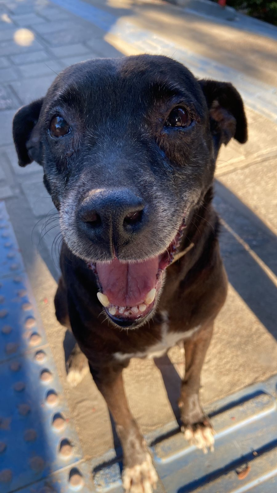
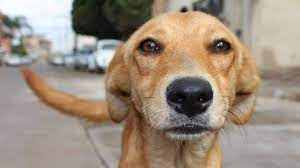
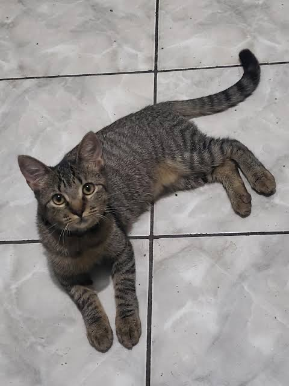

Inicio
Gatinhos,Cahorrinhos... Adoráveis, fofinhos 😸 e malvados(as vezes)😈
infelizmente, é crescente a porcentagem da média de abandono de animais no Brasil,cerca de 60% a mais do que em 2021.
Pensando nisso, fizemos esse trabalho em busca de sensibilizar a população sobre o assunto, estimulando a adoção de animais.
Veja agora alguns animaizinhos disponíveis para adoção:


